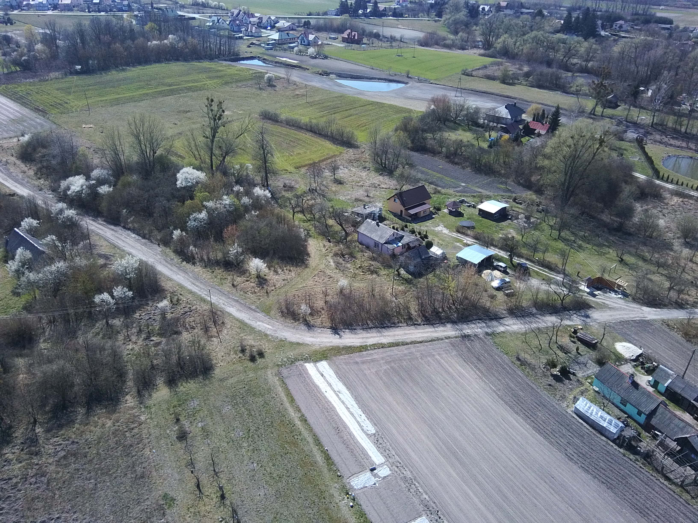

🍃 W tym właśnie lesie, za kierownicą starego Suzuki z 1988 roku uciekam. Jak bohaterzy książki „Wezwanie żmija” Agnieszki Kulbat, która stała się dla mnie inspiracją w pracy nad tym utworem.
🌕 „Zmory wiosenne” to utwór oparty na wierszu Bolesława Leśmiana utkany z głosu, skrzypiec, basu, perkusji i echa wiosennych lęków. Zrealizowany w całości między drzewami.